Generated: 2026-07-12T14:44:53.294100+00:00
trainBankrupt?| Severity | Category | Finding | Recommendation |
|---|---|---|---|
| critical | class_imbalance | Severe class imbalance: 29.994:1 (positive class only 3.2265% of samples). | Use class weighting or resampling (SMOTE/undersampling) and evaluate with PR-AUC / recall, not accuracy. |
| warning | feature_distribution | 67 feature(s) are highly skewed and 62 are heavy-tailed. | Apply log/Box-Cox/Yeo-Johnson transforms or robust scaling for linear/distance-based models. |
| warning | multicollinearity | 93 highly-correlated feature pair(s) and 47 feature(s) with high VIF detected. | Drop/combine redundant ratios or use regularized / tree-based models robust to collinearity. |
| warning | outliers | Features average 8.1% IQR outliers after preprocessing. | Revisit winsorization limits or use outlier-robust models; extreme ratios may be economically meaningful. |
| info | data_quality | No missing values in the processed dataset. | No imputation needed downstream. |
| info | outliers | Isolation-Forest flags 5.5311% of rows as multivariate anomalies. | Inspect flagged firms — they may be genuine distress cases or data-entry errors. |
| info | financial_signal | Most bankruptcy-discriminative ratios: Net Income to Stockholder's Equity, Borrowing dependency, Total debt/Total net worth, Net Income to Total Assets, Liability to Equity. | Prioritize these (and their categories) in feature selection and in the model-explainability narrative. |
| info | financial_signal | 'interest_rate' is the strongest financial category for separating bankrupt vs solvent firms. | Ensure this category is well represented after any feature pruning. |
| info | predictive_power | Strongest univariate predictor: 'Persistent EPS in the Last Four Seasons' (AUC 0.116). | Even single ratios carry signal; expect tree ensembles to exploit their interactions. |
| info | dimensionality | Only 42 of 95 components explain 95% of variance (redundancy index 0.5579). | Consider PCA/feature selection to cut dimensionality and speed up training without losing much signal. |
{
"n_rows": 4773,
"n_cols": 96,
"n_features": 95,
"n_numeric_features": 95,
"n_categorical_features": 0,
"memory_bytes": 3665792,
"memory_mb": 3.496,
"feature_names": [
"ROA(C) before interest and depreciation before interest",
"ROA(A) before interest and % after tax",
"ROA(B) before interest and depreciation after tax",
"Operating Gross Margin",
"Realized Sales Gross Margin",
"Operating Profit Rate",
"Pre-tax net Interest Rate",
"After-tax net Interest Rate",
"... (+87 more)"
],
"target_col": "Bankrupt?",
"target": {
"dtype": "int64",
"n_classes": 2,
"class_counts": {
"0": 4619,
"1": 154
},
"is_binary": true
}
}
{
"n_samples": 4773,
"n_classes": 2,
"class_counts": {
"0": 4619,
"1": 154
},
"class_percentages": {
"0": 96.7735,
"1": 3.2265
},
"majority_count": 4619,
"minority_count": 154,
"imbalance_ratio": 29.994,
"positive_count": 154,
"negative_count": 4619,
"positive_pct": 3.2265,
"is_imbalanced": true
}
{
"n_features_described": 95,
"percentiles": [
1,
5,
10,
25,
50,
75,
90,
95,
"... (+1 more)"
],
"mean_abs_skew": 2.0246549300472334,
"mean_kurtosis": 9.603297089082222
}
{
"total_missing_cells": 0,
"overall_missing_pct": 0.0,
"n_features_with_missing": 0,
"top_missing": []
}
{
"iqr_multiplier": 1.5,
"zscore_threshold": 3.0,
"n_features": 95,
"total_iqr_outliers": 36822,
"total_zscore_outliers": 8759,
"mean_iqr_outlier_pct": 8.120674736842105,
"top_outlier_features": [
{
"feature": "Degree of Financial Leverage (DFL)",
"iqr_outlier_pct": 22.0197,
"zscore_outlier_pct": 2.0532
},
{
"feature": "Fixed Assets Turnover Frequency",
"iqr_outlier_pct": 21.0978,
"zscore_outlier_pct": 3.2474
},
{
"feature": "Interest Coverage Ratio (Interest expense to EBIT)",
"iqr_outlier_pct": 21.014,
"zscore_outlier_pct": 3.0798
},
{
"feature": "Current Asset Turnover Rate",
"iqr_outlier_pct": 20.4484,
"zscore_outlier_pct": 1.5923
},
{
"feature": "Total Asset Growth Rate",
"iqr_outlier_pct": 20.2179,
"zscore_outlier_pct": 0.0
},
{
"feature": "Interest Expense Ratio",
"iqr_outlier_pct": 20.1341,
"zscore_outlier_pct": 3.2055
},
{
"feature": "Cash Flow to Liability",
"iqr_outlier_pct": 17.9342,
"zscore_outlier_pct": 3.415
},
{
"feature": "No-credit Interval",
"iqr_outlier_pct": 16.321,
"zscore_outlier_pct": 3.6246
},
"... (+7 more)"
],
"isolation_forest": {
"available": true,
"n_anomalies": 264,
"anomaly_pct": 5.5311,
"min_score": -0.629345933941696,
"mean_score": -0.4118991689912868
}
}
{
"n_features": 95,
"n_highly_skewed": 67,
"n_heavy_tailed": 62,
"highly_skewed": [
"Operating Gross Margin",
"Realized Sales Gross Margin",
"Operating Profit Rate",
"Pre-tax net Interest Rate",
"After-tax net Interest Rate",
"Continuous interest rate (after tax)",
"Operating Expense Rate",
"Research and development expense rate",
"... (+17 more)"
],
"heavy_tailed": [
"Operating Profit Rate",
"Pre-tax net Interest Rate",
"After-tax net Interest Rate",
"Non-industry income and expenditure/revenue",
"Continuous interest rate (after tax)",
"Cash flow rate",
"Interest-bearing debt interest rate",
"Net Value Per Share (B)",
"... (+17 more)"
]
}
{
"n_features": 95,
"high_correlation_threshold": 0.8,
"n_high_correlation_pairs": 93,
"top_pairs": [
{
"feature_a": "Current Liabilities/Equity",
"feature_b": "Current Liability to Equity",
"pearson_r": 1.0
},
{
"feature_a": "Current Liabilities/Liability",
"feature_b": "Current Liability to Liability",
"pearson_r": 1.0
},
{
"feature_a": "Debt ratio %",
"feature_b": "Net worth/Assets",
"pearson_r": -1.0
},
{
"feature_a": "Operating Gross Margin",
"feature_b": "Gross Profit to Sales",
"pearson_r": 0.999999984545077
},
{
"feature_a": "Net Value Per Share (A)",
"feature_b": "Net Value Per Share (C)",
"pearson_r": 0.9998384374943013
},
{
"feature_a": "Net Value Per Share (B)",
"feature_b": "Net Value Per Share (A)",
"pearson_r": 0.9998080685626872
},
{
"feature_a": "Net Value Per Share (B)",
"feature_b": "Net Value Per Share (C)",
"pearson_r": 0.9996461962822704
},
{
"feature_a": "Operating Gross Margin",
"feature_b": "Realized Sales Gross Margin",
"pearson_r": 0.9988435903221798
},
"... (+7 more)"
],
"vif_threshold": 10.0,
"n_high_vif": 47,
"high_vif_features": [
"Operating Gross Margin",
"Gross Profit to Sales",
"Net Value Per Share (A)",
"Net Value Per Share (C)",
"Net Value Per Share (B)",
"Operating Profit Per Share (Yuan \u00a5)",
"Operating profit/Paid-in capital",
"Realized Sales Gross Margin",
"... (+12 more)"
]
}
{
"n_ratios": 95,
"categories": {
"profitability": 30,
"leverage": 22,
"liquidity": 14,
"other": 13,
"efficiency": 10,
"interest_rate": 4,
"growth": 2
},
"target_conditioned": true,
"top_discriminative": [
{
"feature": "Net Income to Stockholder's Equity",
"category": "profitability",
"cohens_d": -2.024494310860355,
"mean_solvent": 0.06151444974500832,
"mean_bankrupt": -1.8450340478718845
},
{
"feature": "Borrowing dependency",
"category": "leverage",
"cohens_d": 1.9656533420295688,
"mean_solvent": -0.059921671024376344,
"mean_bankrupt": 1.7972610289712863
},
{
"feature": "Total debt/Total net worth",
"category": "leverage",
"cohens_d": 1.8777519548525088,
"mean_solvent": -0.05751348469668205,
"mean_bankrupt": 1.7250310767141157
},
{
"feature": "Net Income to Total Assets",
"category": "profitability",
"cohens_d": -1.7123339760110068,
"mean_solvent": 0.05289067781389604,
"mean_bankrupt": -1.5863768884570713
},
{
"feature": "Liability to Equity",
"category": "leverage",
"cohens_d": 1.7031070701250168,
"mean_solvent": -0.052629412594782696,
"mean_bankrupt": 1.5785406284111545
},
{
"feature": "Retained Earnings to Total Assets",
"category": "profitability",
"cohens_d": -1.6100086046527076,
"mean_solvent": 0.04997371878875066,
"mean_bankrupt": -1.498887058994774
},
{
"feature": "ROA(A) before interest and % after tax",
"category": "profitability",
"cohens_d": -1.5238547781142,
"mean_solvent": 0.047485158315555866,
"mean_bankrupt": -1.4242464042828165
},
{
"feature": "ROA(B) before interest and depreciation after tax",
"category": "profitability",
"cohens_d": -1.49718715335598,
"mean_solvent": 0.046708993397324525,
"mean_bankrupt": -1.4009664967677822
},
"... (+7 more)"
],
"category_strength": {
"interest_rate": 1.2694,
"profitability": 1.0074,
"leverage": 0.8144,
"growth": 0.558,
"liquidity": 0.4729,
"other": 0.4465,
"efficiency": 0.1869
}
}
{
"n_features": 95,
"positive_class": "1",
"mutual_info_available": true,
"top_by_separability": [
{
"feature": "Persistent EPS in the Last Four Seasons",
"point_biserial_r": -0.24012575677506282,
"mutual_info": 0.042079070369428484,
"univariate_auc": 0.11552719849970337,
"separability": 0.7689456030005932
},
{
"feature": "Net Income to Total Assets",
"point_biserial_r": -0.289662819324115,
"mutual_info": 0.03483650762810098,
"univariate_auc": 0.1224607282736748,
"separability": 0.7550785434526504
},
{
"feature": "Net profit before tax/Paid-in capital",
"point_biserial_r": -0.22739118364872885,
"mutual_info": 0.03888059657723475,
"univariate_auc": 0.12406758645121928,
"separability": 0.7518648270975614
},
{
"feature": "Per Share Net profit before tax (Yuan \u00a5)",
"point_biserial_r": -0.22801401956014528,
"mutual_info": 0.0396521883641785,
"univariate_auc": 0.1248717184525801,
"separability": 0.7502565630948398
},
{
"feature": "Total debt/Total net worth",
"point_biserial_r": 0.31498023498609895,
"mutual_info": 0.037472929919869946,
"univariate_auc": 0.8742897068292176,
"separability": 0.7485794136584352
},
{
"feature": "Continuous interest rate (after tax)",
"point_biserial_r": -0.2535492286395594,
"mutual_info": 0.03681749604466478,
"univariate_auc": 0.12917284058223655,
"separability": 0.7416543188355269
},
{
"feature": "Borrowing dependency",
"point_biserial_r": 0.32816898714373305,
"mutual_info": 0.03798432752131409,
"univariate_auc": 0.8704890584626458,
"separability": 0.7409781169252916
},
{
"feature": "Retained Earnings to Total Assets",
"point_biserial_r": -0.27368770593924907,
"mutual_info": 0.029979271630338644,
"univariate_auc": 0.12999946578643265,
"separability": 0.7400010684271348
},
"... (+12 more)"
],
"max_abs_point_biserial": 0.33689205128004,
"mean_separability": 0.4362720061584022
}
{
"n_features": 95,
"n_components": 95,
"pc1_variance": 0.22028620996795914,
"pc2_variance": 0.1183475494187914,
"top5_cumulative_variance": 0.5005348441201014,
"n_components_80pct": 22,
"n_components_90pct": 33,
"n_components_95pct": 42,
"n_components_99pct": 59,
"redundancy_index": 0.5579
}
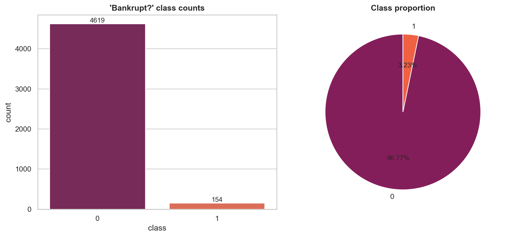
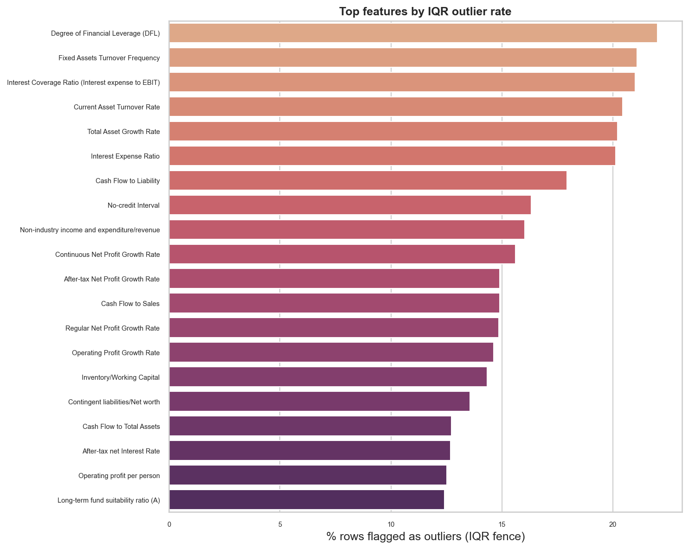
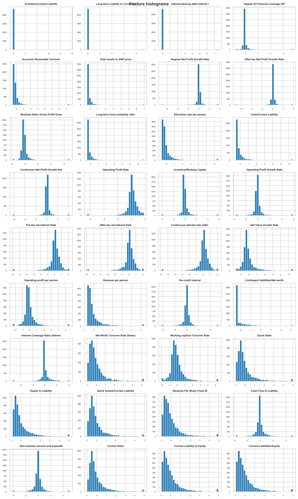
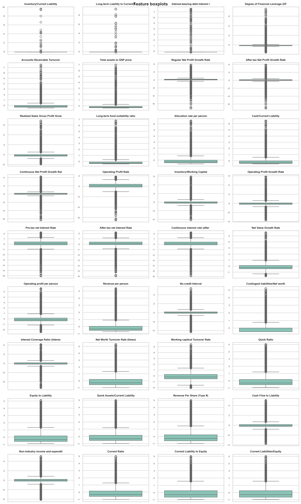
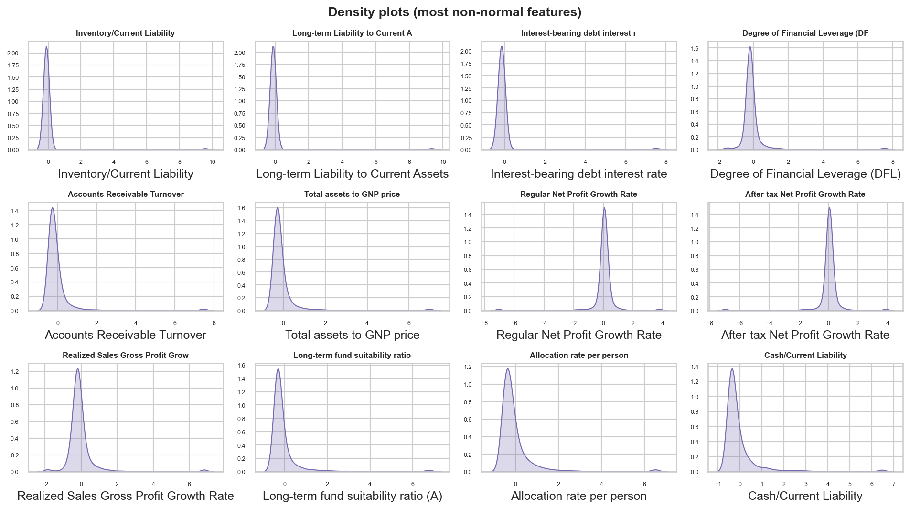
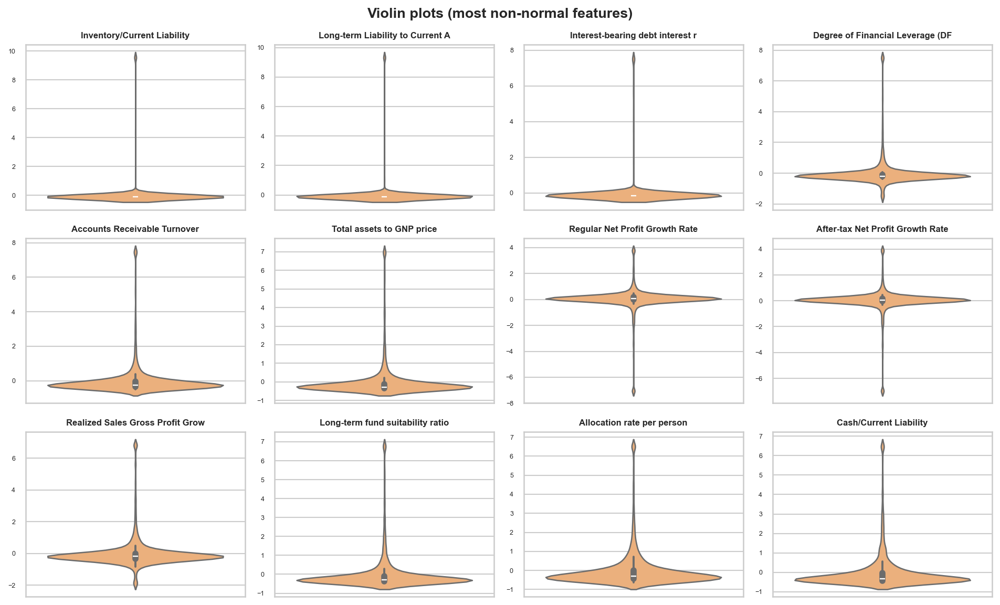
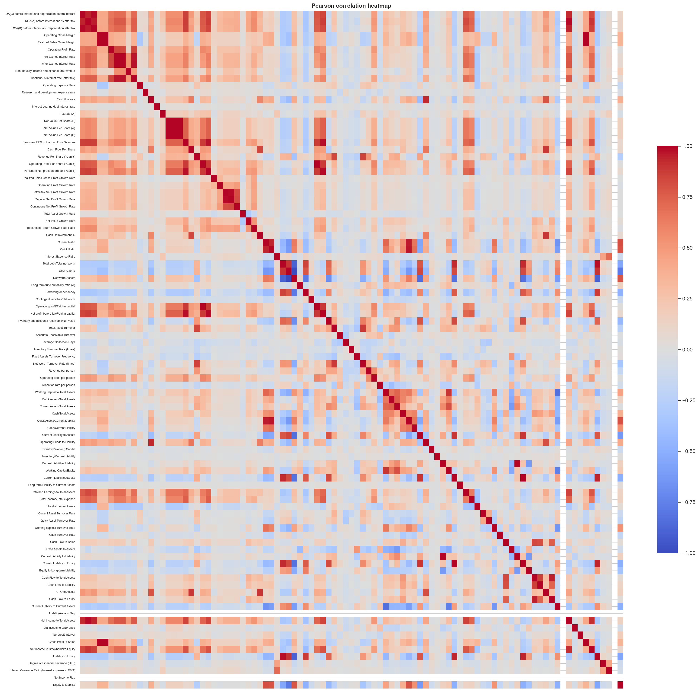
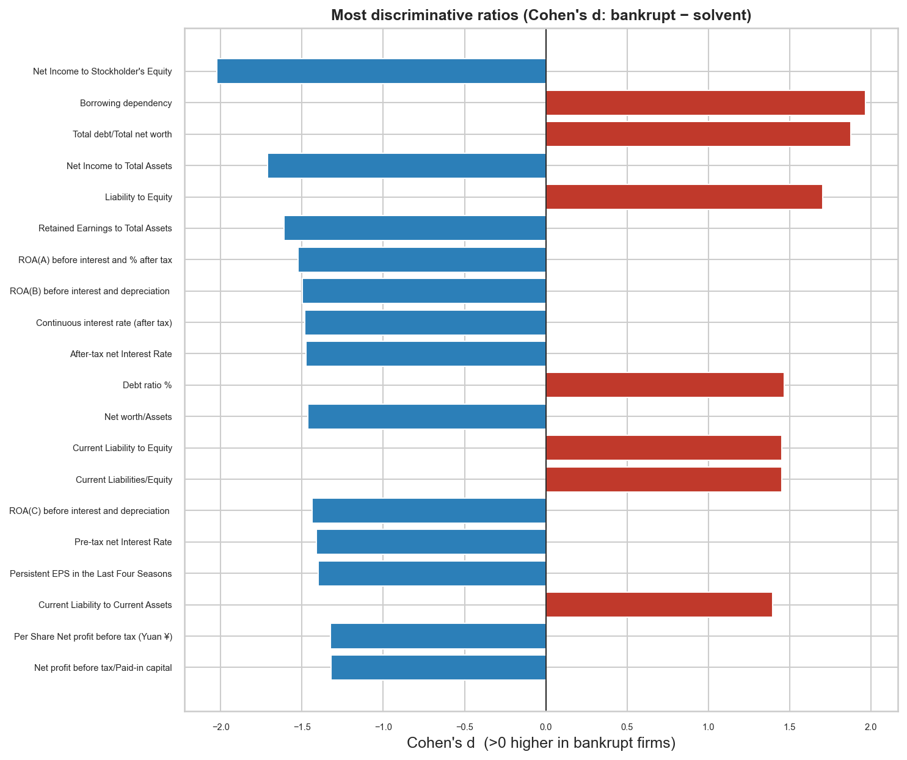
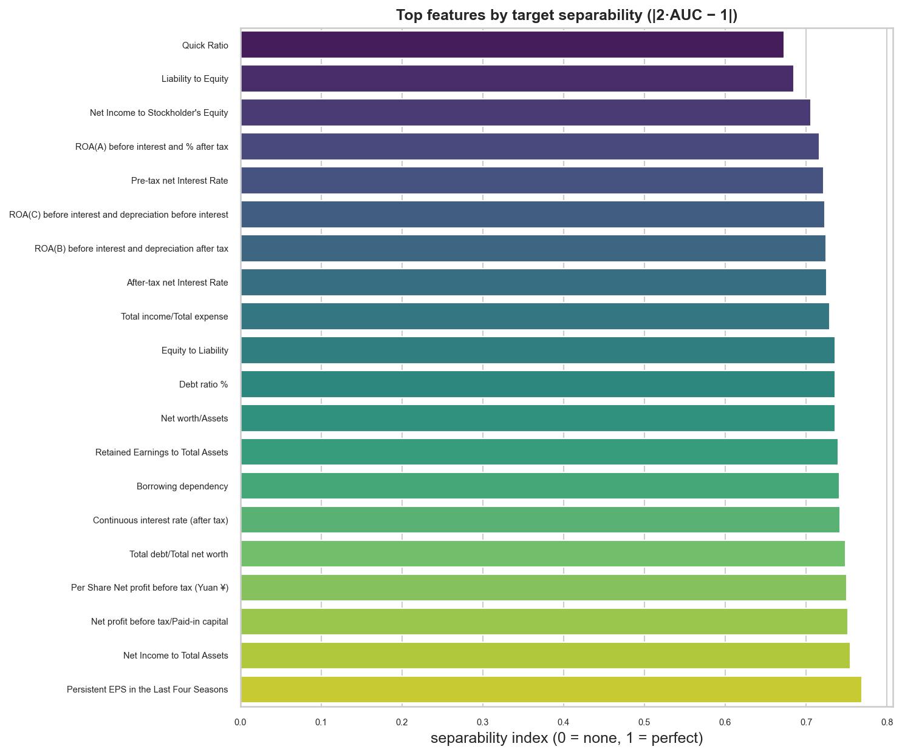
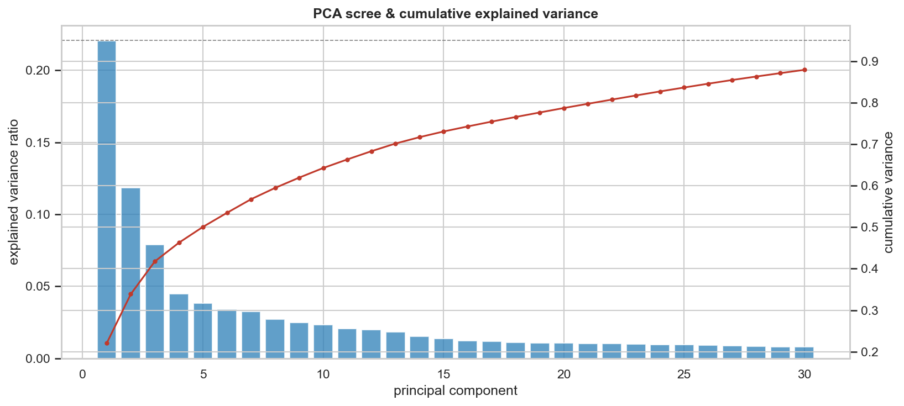
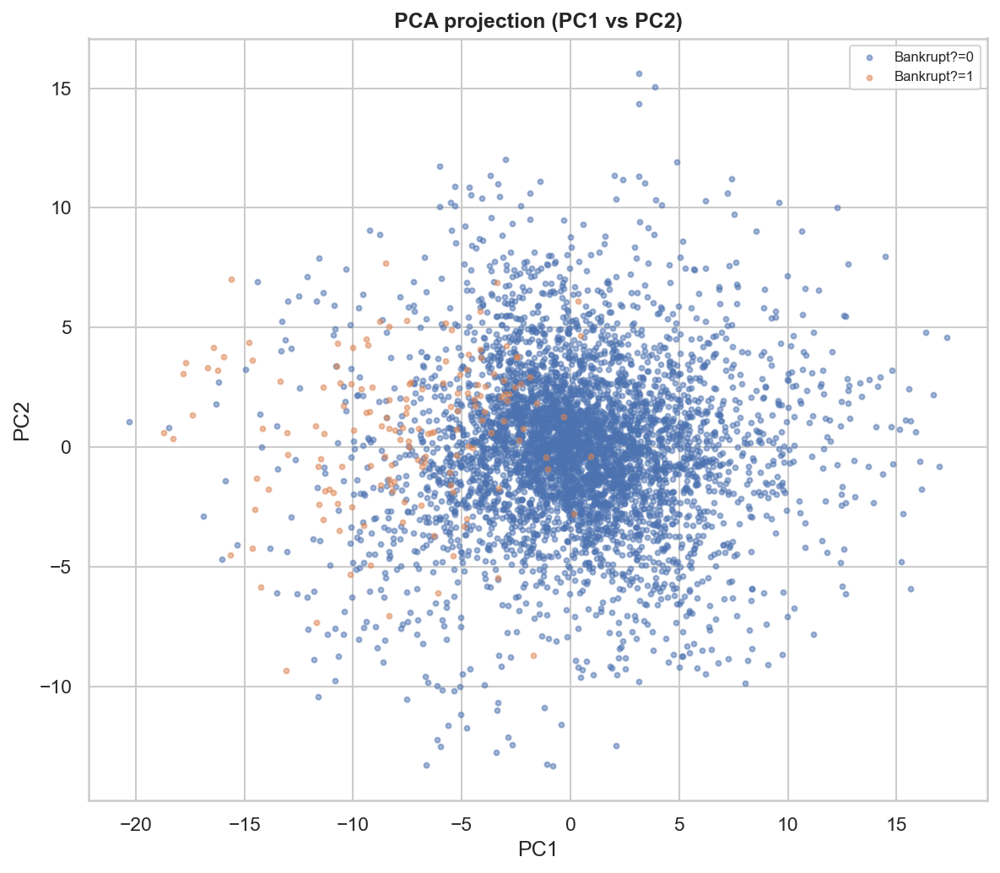